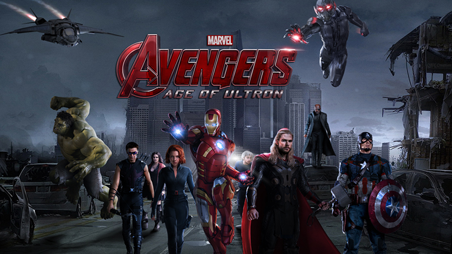

Musica
En marzo de 2014, Brian Tyler firmo para componer la banda sonora de la película, reemplazando al compositor de la primera, Alan Silvestri, haciendo de esta su tercera colaboración con Marvel seguido de Iron Man 3 y Thor: The Dark World en el 2013.134 También colabró el famoso Danny Elfman, quien ya compuso las bandas sonoras de otras películas basadas en cómics Marvel, como Spider-Man y Hulk
Curiosidades
Duración Se ha confirmado que esta es la película mas larga que ha hecho Marvel Studios hasta el momento, con una duración de 2 horas y 31 minutos superando a su antecesora.
2. Duración real A pesar de ser la película mas larga hasta ahora por Marvel, todavía es mucho mas larga de lo que se ha confirmado, ya que aproximadamente dura 3 horas y 30 minutos, pero se decidió eliminar una hora de película. Esto es similar a lo que paso con la primera película de los Vengadores, sobraron muchas escenas y decidieron quitarlas, pero algunas de estas se reutilizaron en Capitán América 2.
3. Doble Cameo Se ha hecho costumbre ver cameos de Stan Lee dentro y fuera de las películas de Marvel Studios, ahora Stan Lee confirmo que tiene dos cameos en esta cinta, Lo curioso es que en la anterior película de Avengers también tenía dos cameos y solo pudimos ver uno, entonces, ¿porque no vimos el otro? pues como viste en el punto anterior quitaron varias escenas y entre ellas se encontraba ese cameo de Stan que nunca vimos.
4. Embarazo de Scarlett Johansson Durante la filmación de la cinta la actriz Scarlett Johansson quien interpreta a Natasha Romanoff(Black Widow),estaba embarazada, por lo que se apresuraron a grabar sus escenas y contrataron a 3 dobles para que hicieran las escenas de acción.
5. Elizabeth Olsen La actriz Elizabeth Olsen que hace el papel de Wanda Maximoff(Scarlet Witch), menciono que durante la grabación de la película, se resistió a hacer sonidos con su boca mientras lanzaba esferas de energía en la pantalla verde. .
6. QuickSilver vs QuickSilver El actor Aaron Taylor-Johnson quien encarna a Pietro Maximoff en Los Vengadores Era de Ultron, ya ha estado compartiendo créditos y estando junto en una película con Evan Peters, que curiosamente es el QuickSilver de X-Men Dias del Futuro pasado
7. Rodaje El rodaje de Avengers 2 fue muy diferente al de el primer largometraje, ya que la grabación de la primera película de Avengers fue en su mayoría hecho en sets de grabación, y en esta secuela, la mayor parte de la película fue hecha en locaciones reales y globales.
8. Aventura Global Al leerlo podrías pensar que fue una aventura de tal magnitud dentro de la película, pero no, también lo fue detrás de cámaras ya que grabaron en diferentes partes del mundo como son: Nueva York, Italia del Norte, Sudáfrica, Londres y Corea del Sur. El elenco estuvo muy agradecido de que los dejaran grabar en sus calles y el director Joss Whedon se sorprendió al ver el impacto que causan los vengadores alrededor del mundo.
9. ¡Hulk! El actor Mark Ruffalo que interpreta Bruce Banner, después de hacer todas sus escenas de Hulk con captura de movimiento, dijo que después de todo eso, tenia que hacer los gestos de la cara de Hulk y para hacerlo tenia que estar sin mover nada mas que su rostro lo cual fue muy incomodo para el actor.
10. Escena Post-Créditos Algo que causo mucha controversia, es que días antes del estreno mundial de Age of Ultron, el director de esta cinta Joss Whedon, afirmó que no habría escena post-créditos en esta película lo que la convertiría en la primera película de Marvel Sudios sin una de estas escenas, lo cual entristeció y decepciono a muchos fans, pero resulta que Avengers Age of Ultron si tiene escena Post-Créditos, entonces eso significa que ¿Joss nos engaño? No, pues el se refería a la escena que viene justo al final de la película como los anteriores largometrajes, en esta cinta la escena viene después de los créditos primarios o principales no completamente en el final, así que si no la has visto quédate tranquilo esperando a que salga la escena, pues si hay una
Extras
James Spader como Ultron Robert Downey Jr. como Anthony "Tony" Stark / Iron Man Chris Evans como Steven "Steve" Rogers / Capitán América Chris Hemsworth como Thor Mark Ruffalo como Bruce Banner / Hulk Scarlett Johansson como Natasha Romanoff / Viuda Negra Jeremy Renner como Clint Barton/Hawkeye Aaron Taylor-Johnson como Pietro Maximoff / Quicksilver Elizabeth Olsen como Wanda Maximoff / Bruja Escarlata Paul Bettany como Visión Anthony Mackie como Samuel "Sam" Wilson / Falcon Don Cheadle como James "Rhodey" Rhodes / War Machine Stellan Skarsgård como Erik Selvig Cobie Smulders como Maria Hill Samuel L. Jackson como Nick Fury Linda Cardellini como Laura Barton Claudia Kim como Dra. Hellen Cho Idris Elba como Heimdall Hayley Atwell como Margaret "Peggy" Carter Thomas Kretschmann como Baron Wolfgang von Strucker Andy Serkis como Ulysses Klaue Julie Delpy como Madame B Dominique Provost-Chalkley como Zrinka